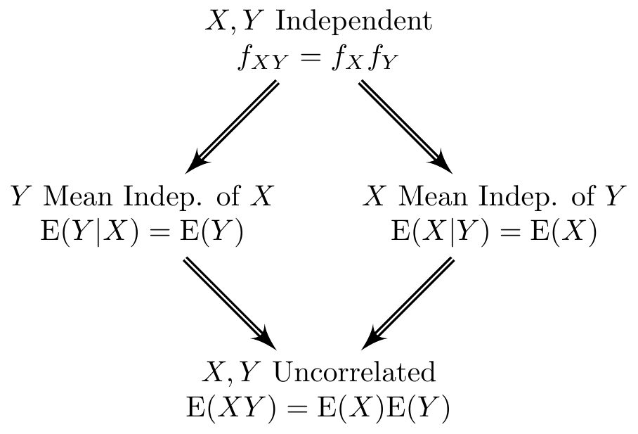

Why Econometrics is Confusing Part II: The Independence Zoo
econometrics
teaching
In econometrics it’s absolutely crucial to keep track of which things are dependent and which are independent. To make this as confusing as possible for students, a typical introductory econometrics course moves back and forth between different notions of dependence, stopping occasionally to mention that they’re not equivalent but never fully explaining why, on the premise that “you’ve certainly already learned this in your introductory probability and statistics course.” I remember finding this extremely frustrating as a student, but only recently managed to translate this frustration into meaningful changes in my own teaching.1 Building on some of my recent teaching materials, this post is a field guide to the menagerie–or at least petting zoo–of “dependence” notions that appear regularly in econometrics. We’ll examine each property on its own along with the relationships between them, using the simple examples to build your intuition. Since a picture is worth a thousand words, here’s one that summarizes the entire post:
Prerequisites
While written at an introductory level, this post assumes basic familiarity with calculations involving discrete and continuous random variables. In particular, I assume that:
- You know the definitions of expected value, variance, covariance, and correlation.
- You are comfortable working with joint, marginal, and conditional distributions of a pair of discrete random variables.
- You understand the uniform distribution and how to compute its moments (mean, variance, etc.).
- You’ve encountered the notion of conditional expectation and the law of iterated expectations.
If you’re a bit rusty on this material, lectures 7-11 from these slides should be helpful. For bivariate, discrete distributions I also suggest watching this video from 1:07:00 to the end and this other video from 0:00:00 up to the one hour mark.
Two Examples
Example #1 - Discrete RVs \((X,Y)\)
My first example involves two discrete random variables \(X\) and \(Y\) with joint probability mass function \(p_{XY}(x,y)\) given by
| \(Y=0\) | \(Y=1\) | |
|---|---|---|
| \(X = -1\) | \(1/3\) | \(0\) |
| \(X = 0\) | \(0\) | \(1/3\) |
| \(X= 1\) | \(1/3\) | \(0\) |
Even without doing any math, we see that knowing \(X\) conveys information about \(Y\), and vice-versa. For example, if \(X = -1\) then we know that \(Y\) must equal zero. Similarly, if \(Y=1\) then \(X\) must equal zero. Spend a bit of time thinking about this joint distribution before reading further. We’ll have plenty of time for mathematics below, but it’s always worth seeing where our intuition takes us before calculating everything.
To streamline our discussion below, it will be helpful to work out a few basic results about \(X\) and \(Y\). A quick calculation with \(p_{XY}\) shows that \[ \mathbb{E}(XY) \equiv \sum_{\text{all } x} \sum_{\text{all } y} x y \cdot p_{XY}(x,y) = 0. \] Calculating the marginal pmfs for \(X\) we see that \[ p_X(-1) = p_X(0) = p_X(1) = 1/3 \implies \mathbb{E}(X) \equiv \sum_{\text{all } x} x \cdot p_X(x) = 0. \] Similarly, calculating the marginal pmf of \(Y\), we obtain \[ p_Y(0) = 2/3,\, p_Y(1) = 1/3 \implies \mathbb{E}(Y) \equiv \sum_{\text{all } y} y \cdot p_Y(y) = 1/3. \] We’ll use these results as ingredients below as we explain and relate three key notions of dependence: correlation, conditional mean independence, and statistical independence.
Example #2 - Continuous RVs \((W,Z)\)
My second example concerns two continuous random variables \(W\) and \(Z\), where \(W \sim \text{Uniform}(-1, 1)\) and \(Z = W^2\). In this example, \(W\) and \(Z\) are very strongly related: if I tell you that the realization of \(W\) is \(w\), then you know for sure that the realization of \(Z\) must be \(w^2\). Again, keep this intuition in mind as we work through the mathematics below.
In the remainder of the post, we’ll find it helpful to refer to a few properties of \(W\) and \(Z\), namely \[ \begin{aligned} \mathbb{E}[W] &\equiv \int_{-\infty}^\infty w\cdot f_W(w)\, dw = \int_{-1}^1 w\cdot \frac{1}{2}\,dw = \left. \frac{w^2}{4}\right|_{-1}^1 = 0\\ \mathbb{E}[Z] &\equiv \mathbb{E}[W^2] = \int_{-\infty}^{\infty} w^2 \cdot f_W(w)\, dw = \int_{-1}^1 w^2 \cdot \frac{1}{2} \, dw = \left. \frac{w^3}{6}\right|_{-1}^1 = \frac{1}{3}\\ \mathbb{E}[WZ] &= \mathbb{E}[W^3] \equiv \int_{-\infty}^\infty w^3 \cdot f_W(w)\, dw =\int_{-1}^1 w^3 \cdot \frac{1}{2}\, dw = \left. \frac{w^4}{8} \right|_{-1}^1 = 0. \end{aligned} \] Since \(W\) is uniform on the interval \([-1,1]\), its pdf is simply \(1/2\) on this interval, and zero otherwise. All else equal, I prefer easy integration problems!
Conditional Mean Independence
We say that \(Y\) is mean independent of \(X\) if \(\mathbb{E}(Y|X) = \mathbb{E}(Y)\). In words,
\(Y\) is mean independent of \(X\) if the conditional mean of \(Y\) given \(X\) equals the unconditional mean of \(Y\).
Just to make things confusing, this property is sometimes called “conditional mean independence” and sometimes called simply “mean independence.” The terms are completely interchangeable. Reversing the roles of \(X\) and \(Y\), we say that \(X\) is mean independent of \(Y\) if the conditional mean of \(X\) given \(Y\) is the same as the unconditional mean of \(X\). Spoiler alert: it is possible for \(X\) to be mean independent of \(Y\) while \(Y\) is not mean independent of \(X\). We’ll discuss this further below.
To better understand the concept of mean independence, let’s quickly review the difference between an unconditional mean and a conditional mean. The unconditional mean \(\mathbb{E}(Y)\), also known as the “expected value” or “expectation” of \(Y\), is a constant number.3 If \(Y\) is discrete, this is simply the probability-weighted average of all possible realizations of \(Y\), namely \[ \mathbb{E}(Y) = \sum_{\text{all } y} y \cdot p_Y(y). \] If \(Y\) is continuous, it’s the same idea but with an integral replacing the sum and a probability density \(f_Y(y)\) multiplied by \(dy\) replacing the probability mass function \(p_Y(y)\). Either way, we’re simply multiplying numbers together and adding up the result. Despite the similarity in notation, the conditional expectation \(\mathbb{E}(Y|X)\) is a function of \(X\) that tells us how the mean of \(Y\) varies with \(X\). Since \(X\) is a random variable, so is \(\mathbb{E}(Y|X)\). If \(Y\) is conditionally mean independent of \(X\) then \(\mathbb{E}(Y|X)\) equals \(\mathbb{E}(Y)\). In words, the mean of \(Y\) does not vary with \(X\). Regardless of the value that \(X\) takes on, the mean of \(Y\) is the same: \(\mathbb{E}(Y)\).
There’s another way to think about this property in terms of prediction. With a bit of calculus, we can show that \(\mathbb{E}(Y)\) solves the following optimization problem: \[ \min_{\text{all constants } c} \mathbb{E}[(Y - c)^2]. \] In other words, \(\mathbb{E}(Y)\) is the constant number that is as close as possible to \(Y\) on average, where “close” is measured by squared euclidean distance. In this sense, we can think of \(\mathbb{E}(Y)\) as our “best guess” of the value that \(Y\) will take. Again using a bit of calculus, it turns out that \(\mathbb{E}(Y|X)\) solves the following optimization problem: \[ \min_{\text{all functions } g} \mathbb{E}[\{Y - g(X) \}^2]. \] (See this video for a proof.) Thus, \(\mathbb{E}(Y|X)\) is the function of \(X\) that is as close as possible to \(Y\) on average, where “close” is measured using squared Euclidean distance. Thus, \(\mathbb{E}(Y|X)\) is our “best guess” of \(Y\) after observing \(X\). We have seen that \(\mathbb{E}(Y)\) and \(\mathbb{E}(Y|X)\) are the solutions to two related but distinct optimization problems; the former is a constant number that doesn’t depend on the realization of \(X\) whereas the latter is a function of \(X\). Mean independence is the special case in which the solutions to the two optimization problems coincide: \(\mathbb{E}(Y|X) = \mathbb{E}(Y)\). Therefore,
\(Y\) is mean independent of \(X\) if our best guess of \(Y\) taking \(X\) into account is the same as our best guess of \(Y\) ignoring \(X\), where “best” is defined by “minimizes average squared distance to \(Y\).”
Example #1: \(X\) is mean independent of \(Y\).
Using the table of joint probabilities for Example #1 above, we found that \(\mathbb{E}(X) = 0\). To determine whether \(X\) is mean independent of \(Y\), we need to calculate \(\mathbb{E}(X|Y=y)\), which we can accomplish as follows: \[ \begin{aligned} \mathbb{E}(X|Y=0) &= \sum_{\text{all } x} x \cdot \mathbb{P}(X=x|Y=0) = \sum_{\text{all } x} x \cdot \frac{\mathbb{P}(X=x,Y=0)}{\mathbb{P}(Y=0)}\\ \\ \mathbb{E}(X|Y=1) &= \sum_{\text{all } x} x \cdot \mathbb{P}(X=x|Y=1) = \sum_{\text{all } x} x \cdot \frac{\mathbb{P}(X=x,Y=1)}{\mathbb{P}(Y=1)}. \end{aligned} \] Substituting the joint and marginal probabilities from the table above, we find that \[ \mathbb{E}(X|Y=0) = 0, \quad \mathbb{E}(X|Y=1) = 0. \] Thus \(\mathbb{E}(X|Y=y)\) simply equals zero, regardless of the realization \(y\) of \(Y\). Since \(\mathbb{E}(X) = 0\) we have shown that \(X\) is conditionally mean independent of \(Y\).
Example #1: \(Y\) is NOT mean independent of \(X\).
To determine whether \(Y\) is mean independent of \(X\) we need to calculate \(\mathbb{E}(Y|X)\). But this is easy. From the table we see that \(Y\) is known with certainty after we observe \(X\): if \(X = -1\) then \(Y = 0\), if \(X = 0\) then \(Y = 1\), and if \(X = 1\) then \(Y = 0\). Thus, without doing any math at all we find that \[ \mathbb{E}(Y|X=-1) = 0, \quad \mathbb{E}(Y|X=0) = 1, \quad \mathbb{E}(Y|X=1) = 0. \] (If you don’t believe me, work through the arithmetic yourself!) This clearly depends on \(X\), so \(Y\) is not mean independent of \(X\).
Example #2: \(Z\) is NOT mean independent of \(W\).
Above we calculated that \(\mathbb{E}(Z) = \mathbb{E}(W^2) = 1/3\). But the conditional expectation is \[ \mathbb{E}(Z|W) = \mathbb{E}(W^2|W) = W^2 \] using the “taking out what is known” property: conditional on \(W\), we know \(W^2\) and can hence treat it as though it were a constant in an unconditional expectation, pulling it in front of the \(\mathbb{E}\) operator. We see that \(\mathbb{E}(Z|W)\) does not equal \(1/3\): its value depends on \(W\). Therefore \(Z\) is not mean independent of \(W\).
Example #2: \(W\) is mean independent of \(Z\).
This one is trickier. To keep this post at an elementary level, my explanation won’t be completely rigorous. For more details see here. We need to calculate \(\mathbb{E}(W|Z)\). Since \(Z \equiv W^2\) this is the same thing as \(\mathbb{E}(W|W^2)\). Let’s start with an example. Suppose we observe \(Z = 1\). This means that \(W^2 = 1\) so \(W\) either equals \(1\) or \(-1\). How likely is each of these possible realizations of \(W\) given that \(W^2 = 1\)? Because the density of \(W\) is symmetric about zero, \(f_W(-1) = f_W(1)\). So given that \(W^2 = 1\), it is just as likely that \(W = 1\) as it is that \(W = -1\). Therefore, \[ \mathbb{E}(W|W^2 = 1) = 0.5 \times 1 + 0.5 \times -1 = 0. \] Generalizing this idea, if we observe \(Z = z\) then \(W = \sqrt{z}\) or \(-\sqrt{z}\). But since \(f_W(\cdot)\) is symmetric about zero, these possibilities are equally likely. Therefore, \[ \mathbb{E}(W|Z=z) = 0.5 \times \sqrt{z} - 0.5 \times \sqrt{z} = 0. \] Above we calculated that \(\mathbb{E}(W) = 0\). Therefore, \(W\) is mean independent of \(Z\).
Statistical Independence
When you see the word “independent” without any qualification, this means “statistically independent.” In keeping with this usage, I often write “independent” rather than “statistically independent.” Whichever terminology you prefer, there are three equivalent ways of defining this idea:
\(X\) and \(Y\) are statistically independent if and only if:
- their joint distribution equals the product of their marginals, or
- the conditional distribution of \(Y|X\) equals the unconditional distribution of \(Y\), or
- the conditional distribution of \(X|Y\) equals the unconditional distribution of \(X\).
The link between these three alternatives is the definition of conditional probability. Suppose that \(X\) and \(Y\) are discrete random variables with joint pmf \(p_{XY}\), marginal pmfs \(p_X\) and \(p_Y\), and conditional pmfs \(p_{X|Y}\) and \(p_{Y|X}\). Version 1 requires that \(p_{XY}(x,y) = p_X(x) p_Y(y)\) for all realizations \(x,y\). But by the definition of conditional probability, \[ p_{X|Y}(x|y) \equiv \frac{p_{XY}(x,y)}{p_Y(y)}, \quad p_{Y|X}(y|x) \equiv \frac{p_{XY}(x,y)}{p_X(x)}. \] If \(p_{XY} = p_X p_Y\), these expressions simplify to \[ p_{X|Y}(x|y) \equiv \frac{p_{X}(x)p_Y(y)}{p_Y(y)} = p_X(x), \quad p_{Y|X}(y|x) \equiv \frac{p_{X}(x)p_Y(y)}{p_X(x)} = p_Y(y) \] so 1 implies 2 and 3. Similarly, if \(p_{X|Y}=p_X\) then by the definition of conditional probability \[ p_{X|Y}(x|y) \equiv \frac{p_{XY}(x,y)}{p_Y(y)} = p_X(x). \] Re-arranging, this shows that \(p_{XY} = p_X p_Y\), so 3 implies 1. An almost identical argument shows that 2 implies 1, completing our proof that these three seemingly different definitions of statistical independence are equivalent. If \(X\) and \(Y\) are continuous, the idea is the same but with densities replacing probability mass functions, e.g. \(f_{XY}(x,y) = f_X(x) f_Y(y)\) and so on.
In most examples, it’s easier to show independence (or the lack thereof) using 2 or 3 rather than 1. These latter two definitions are also more intuitively appealing. To say that the conditional distribution of \(X|Y\) is the same as the unconditional distribution of \(X\) is the same thing as saying that
\(Y\) provides absolutely no information about \(X\) whatsoever.
If learning \(Y\) tells us anything at all about \(X\), then \(X\) and \(Y\) are not independent. Similarly, if \(X\) tells us anything about \(Y\) at all, then \(X\) and \(Y\) are not independent.
Example #1: \(X\) and \(Y\) are NOT independent.
If I tell you that \(X = 0\), then you know for sure that \(Y = 0\). Before I told you this, you did not know that \(Y\) would equal zero: it’s a random variable with support set \(\{0,1\}\). Since learning \(X\) has the potential to tell you something about \(Y\), \(X\) and \(Y\) are not independent. That was easy! For extra credit, \(p_{XY}(-1,0) = 1/3\) but \(p_X(-1)p_Y(0) = 1/3 \times 2/3 = 2/9\). Since these are not equal, \(p_{XY}\neq p_X p_Y\) so the joint doesn’t equal the product of the marginals. We didn’t need to check this, but it’s reassuring to see that everything works out as it should.
Example #2: \(W\) and \(Z\) are NOT independent.
Again, this one is easy: learning that \(W = w\) tells us that \(Z = w^2\). We didn’t know this before, so \(W\) and \(Z\) cannot be independent.
Relating the Three Properties
Now that we’ve described uncorrelatedness, mean independence, and statistical independence, we’re ready to see how these properties relate to one another. Let’s start by reviewing what we learned from the examples given above. In example #1:
- \(X\) and \(Y\) are uncorrelated
- \(X\) is mean independent of \(Y\)
- \(Y\) is not mean independent of \(X\)
- \(X\) and \(Y\) are not independent.
In example #2, we found that
- \(W\) and \(Z\) are uncorrelated
- \(W\) is mean independent of \(Z\).
- \(Z\) is not mean independent of \(W\).
- \(W\) and \(Z\) are not independent.
These are worth remembering, because they are relatively simple and provide a source of counterexamples to help you avoid making tempting but incorrect statements about correlation, mean independence, and statistical independence. For example:
- Uncorrelatedness does NOT IMPLY statistical independence: \(X\) and \(Y\) are not independent, but they are uncorrelated. (Ditto for \(W\) and \(Z\).)
- Mean independence does NOT IMPLY statistical independence: \(W\) is mean independent of \(Z\) but these random variables are not independent.
- Mean independence is NOT SYMMETRIC: \(X\) is mean independent of \(Y\), but \(Y\) is not mean independent of \(X\).
Now that we have a handle on what’s not true, let’s see what can be said about correlation, mean independence, and statistical independence.
Statistical Independence Implies Conditional Mean Independence
Statistical independence is the “strongest” of the three properties: it implies both mean independence and uncorrelatedness. We’ll show this in two steps. In the first step, we’ll show that statistical independence implies mean independence. In the second step we’ll show that mean independence implies uncorrelatedness. Then we’ll bring this overly-long blog post to a close! Suppose that \(X\) and \(Y\) are discrete random variables. (For the continuous case, replace sums with integrals.) If \(X\) is statistically independent of \(Y\), then \(p_{Y|X} = p_Y\) and \(p_{X|Y} = p_X\). Hence, \[ \begin{aligned} \mathbb{E}(Y|X=x) &\equiv \sum_{\text{all } y} y \cdot p_{Y|X}(y|x) = \sum_{\text{all } y} y \cdot p_Y(y) \equiv \mathbb{E}(Y)\\ \mathbb{E}(X|Y=y) &\equiv \sum_{\text{all } x} x \cdot p_{X|Y}(x|y) = \sum_{\text{all } x} x \cdot p_X(x) \equiv \mathbb{E}(X) \end{aligned} \] so \(Y\) is mean independent of \(X\) and \(X\) is mean independent of \(Y\).
Summary
In this post we have shown that:
- Statistical Independence \(\implies\) Mean Independence \(\implies\) Uncorrelatedness.
- Uncorrelatedness does not imply mean independence or statistical independence.
- Mean independence does not imply statistical independence.
- Statistical independence and correlation are symmetric; mean independence is not.
Reading the figure from the very beginning of this post from top to bottom: statistical independence is the strongest notion, followed by mean independence, followed by uncorrelatedness.
Footnotes
It turns out that teaching well is extremely hard. I am incredibly grateful to those intrepid souls who bravely raise their hand and inform me that no one in the room has any idea what I’m talking about!↩︎
I used a small number of simulation draws so it would be easier to see the data in the plot. If you use a larger number of simulations, the correlation will be even closer to zero and the line almost perfectly flat.↩︎
Throughout this post, I make the tacit assumption that all means–conditional or unconditional–exist and are finite.↩︎
But on the plus side, we got a lot of great pop songs out of the deal!↩︎